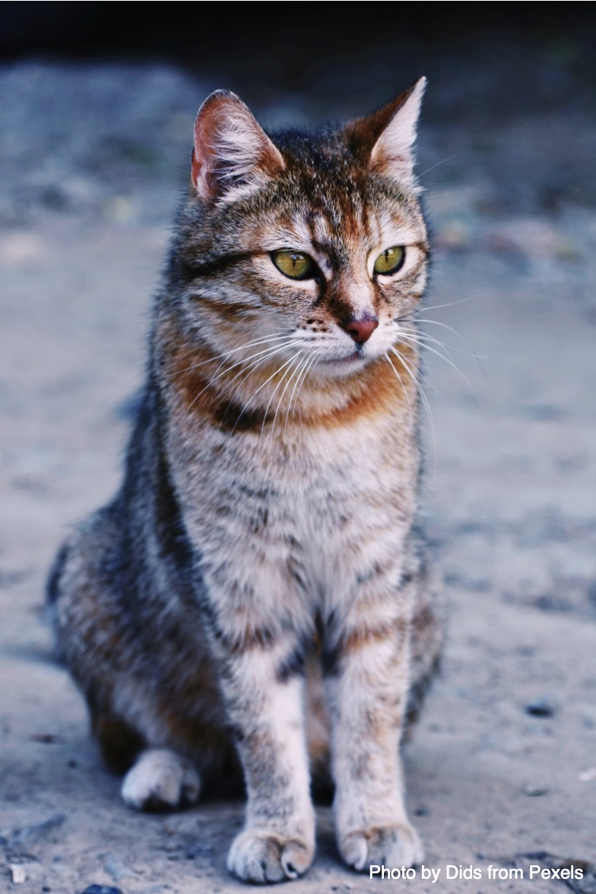
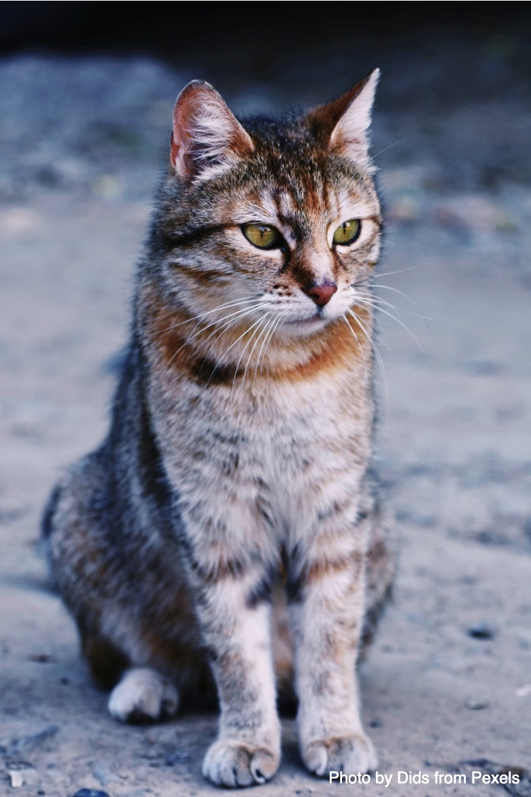
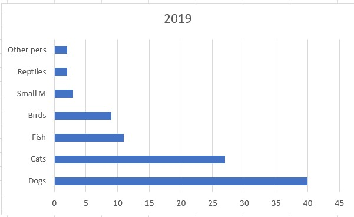

Pet Ownership Statistics
Pets and the Pandemic A report from Animal Medicines Australia (AMA) has found that many Australians took the opportunity to introduce a pet into their household during the pandemic. Their survey indicated that there was a significant increase in the percent of households taking in a new dog, fish or bird. Their research also indicated that pets had a number of positive influences on their lives such as:
- companionship
- better mental health
- joy and happiness.
 



Figure 1: Percent of most popular pet owned by Australians in 2019. Data Source: Animal Medicines Australia Report